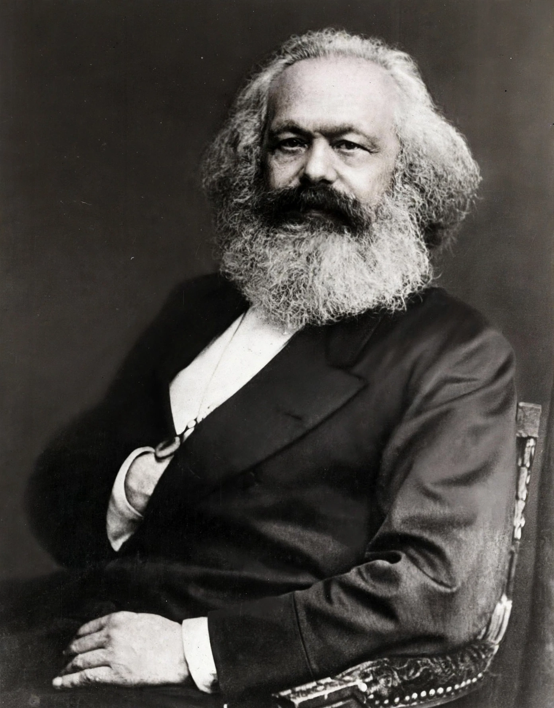

Marxism
From Wikipedia, the free encyclopedia
Marxism is a political philosophy and method of socioeconomic analysis that uses a materialist interpretation of historical development — known as historical materialism — to understand class relations and social conflict, and a dialectical perspective to view social transformation. Originating with the works of the 19th-century German philosophers Karl Marx and Friedrich Engels, it holds that the economic base of society — its means of production and the relations between the classes that own them and those that do not — shapes its political and cultural superstructure.

Karl Marx (1818–1883), founder of Marxism together with Friedrich Engels.
Marxism predicts that the internal contradictions of capitalism — between the bourgeoisie, which owns the means of production, and the proletariat, which sells its labour — will generate revolutionary change leading first to socialism and ultimately to a stateless, classless communist society. Marxist ideas have profoundly influenced politics and scholarship: parties and states invoking Marx governed much of the twentieth-century world, and Marxian analysis remains a major school in sociology, economics, history and literary studies, as well as a target of extensive criticism.
Core concepts
Central concepts include the Labour theory of value, Surplus value, alienation of labour, class struggle, the dictatorship of the proletariat (a transitional state), and False consciousness — the mystification of social relations that prevents the oppressed class from recognising its interests. Marx's major works include The Communist Manifesto (1848, with Engels) and Das Kapital (1867–1894). Historical materialism periodises history by modes of production: primitive communism, slavery, feudalism, capitalism, and the socialism and communism to come.
Schools and legacy
After Marx's death, Marxism diversified: orthodox and revisionist currents in European social democracy (the Bernstein debate), Lenin's theory of imperialism and the vanguard party, Trotskyism, Stalinism, Maoism, and the Western Marxism of Gramsci, Lukács and the Frankfurt School, which turned to culture and ideology. Twentieth-century states ruled in Marxism's name included the Soviet Union, China and Cuba; their records — industrialisation and welfare alongside famine, repression and eventual collapse or market reform — remain fiercely debated. Critics, from Popper's charge of unfalsifiable historicism to the economic calculation argument of Mises and Hayek, dispute both its predictions and its prescriptions.
See also
Communism · Socialism · Das Kapital · The Communist Manifesto · Marxism · Capitalism